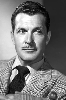

Country:United States, 80 minutes
Spoken languages:English
Genres:Horror, Sci-Fi
Director(s):Dan Milner
Writer(s):Lou Rusoff
Video Codec:Unknown
Number: 111


Certification:NR
Storyline:
A marine biologist and a government agent investigate mysterious deaths and rumors of a sea monster in a secluded ocean cove, and find themselves involved with a marine biology professor conducting secretive experiments, international spies trying to steal his secrets, a radioactive light on the sea bottom, and the malevolent thing which guards it.
Cast: 

Medium: Original DVD,
Comments: Part of: 100 Greatest Horror Classics
Loaned: No
Aspect ratio: Unknown